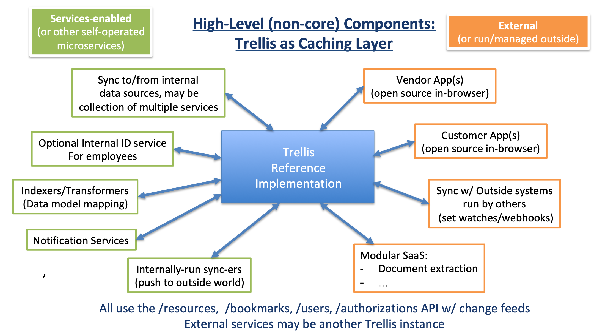
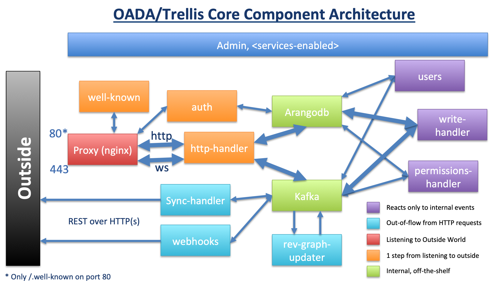

name: title class: center, middle, inverse # Architecture, Deployment, and Operations ## with OADA/Trellis ----------------------------------- [http://trellisframework.org](http://trellisframework.org) [http://github.com/oada](http://github.com/oada) [http://github.com/trellisfw](http://github.com/trellisfw) .footnote[ created with [remark](http://github.com/gnab/remark) ] --- name: cliffs_notes class: middle, inverse # OADA/Trellis Cliff's Notes * OADA/Trellis defines a data-model-agnostic REST API * API can push/notify/sync asynchronously (websockets, webhooks, OADA sync) * Data models published as graph schemas on top of OADA/Trellis REST API * Reference implementation is [https://github.com/oada/oada-srvc-docker](https://github.comoada/oada-srvc-docker) * Install reference implentation to get OADA/Trellis API in your domain --- class: middle, inverse  --- class: middle, inverse  --- class: middle, inverse # Key Concept: `services-enabled` system is controlled/configured by docker-compose files * `oada-core/` * main services that implement OADA API * has docker-compose.yml * `services-available/` * place plugins/overrides here. * merges each docker-compose.yml w/ core * any service can augment or override core by merging docker-compose.yml * `services-enabled/` * symlink to services-available to enable, can use 000-<name> for priority * `oada` script: * run docker-compose with merge of all docker-compose files * `oada up -d` --- class: center, middle, inverse # Deploying a new OADA/Trellis instance --- name: system class: middle, inverse # Deploying a new OADA/Trellis instance ## System Requirements: * RAM >= 4 GB * Docker >= 19 * docker-compose > 1.24 ## System Recommendations: * Recent Linux/Mac (Windows+Docker = tenuous relationship) --- name: decisions class: middle, inverse # Deploying a new OADA/Trellis instance ## Decisions to make: * Where to host `/.well-known/oada-configuration` * Domain(s)/subdomain(s) for OADA/Trellis API base ## Recommended: * same domain for all, simple to remember (like trellis.ourcompany.com) --- name: install class: middle, inverse # Deploying a new OADA/Trellis Instance ## Get the code: ```bash git clone git@github.com:OADA/oada-srvc-docker.git ``` ## Install `oada` script, install npm libraries: ```bash # cd oada-srvc-docker # oada --install-self ``` The `oada` script passes its arguments to `docker-compose`, so whatever works with docker-compose works with `oada`. --- name: setup class: middle, inverse # Deploying a new OADA/Trellis Instance ## Setup Domains 1. Create domain folder for each domain to serve (`proxy` and `auth` use domain configs) * can copy `localhost` domain and modify to suit 2. Edit client certificate (used in openid-connect) with your info 3. Sign client certificate as jwt (from within admin container: `oada run --rm admin`): ```bash # oada run --rm admin oada-sign /domains-available/<your_domain>/unsigned_client_cert.js ``` ## https certs * admin container has certbot, proxy expects cert in domain folder * in admin, symlink /etc/letsencrypt/live to proxy folder * you can renew manually w/ admin, or make a cron container ```bash # oada run --rm admin certbot renew ``` --- name: starting class: inverse # Starting/Running OADA/Trellis ## Starting (will build or re-build containers as needed): ```bash oada up -d ``` ## Restarting any given service: ```bash oada restart <service_name> ``` Docker will automatically restart failed services, and will restart all on host boot. --- class: inverse # Debugging, Monitoring ## Check up status: (restarts that service w/ terse logs) ```bash oada ps ``` ## Container logs: ```bash oada logs --tail=1000 -f <service_name> ``` ## Enable all debugging messages (restarts that service w/ verbose logs) ```bash DEBUG="*" oada up -d <service_name> ``` `DEBUG="*info*"` for normal logs Better monitoring+notifications are on roadmap --- class: inverse # Backups * no existing enforced backup scheme * can map docker data volumes to cloud block storage w/ `services-enabled` override * can cron `arangodump` nightly for protection against non-physical errors # Failover * no existing enforced failover scheme * future may use Kubernetes to coordinate hosts * option is to map docker data volumes to cloud block storage, then failover to new VM # Updates Rolling updates are on roadmap ```bash git pull && oada run yarn && oada up -d && oada restart ``` Near-term roadmap could include `oada --upgrade` option to intelligently restart/rebuild only those containers affected by update --- class: inverse # Using custom internal identity service Do this as `services-enabled` plugin 1. Override default OADA login template 2. Add proxy route to your plugin 3. Set userid in session upon identity discovery 4. Redirect back to OADA default login to complete OAuth2 token handout --- class: inverse, middle # Simple "up and running" test: ```bash curl https://<domain>/.well-known/oada-configuration ``` You may need to allow an untrusted HTTPS certificate if on localhost or otherwise developing without a valid SSL cert.